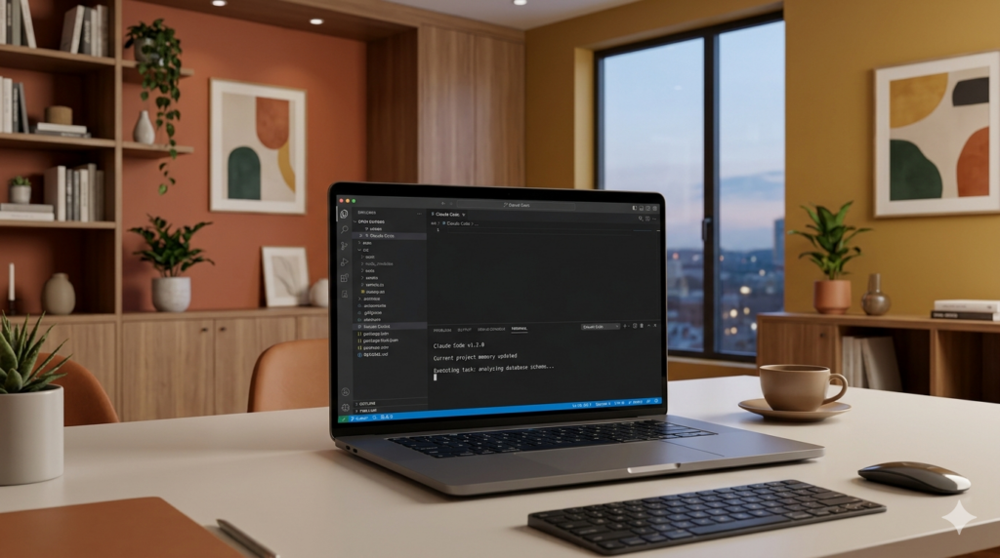

O Desafio ContentOS é para nutricionistas que querem parar de criar conteúdo no escuro e começar a usar IA como uma profissional, com sistema e estratégia.
Investimento Único: R$ 47 | Acesso ao Grupo

Seu conteúdo existe, mas não atrai, não qualifica e não vende.
Sabe que existe mas não sabe por onde começar ou o que fazer com ele.
Posta na inspiração, atrasa e sente culpa por não ser consistente.
A ideia existe, mas a estrutura, a copy e os posts travam tudo.
Sem precisar de fotógrafo nem de designer para cada post.
Sabe que tem potencial, mas a produção de conteúdo consome tudo.
Uma aula gravada por dia, entregáveis e suporte ao vivo no WhatsApp.
Prepare sua conta, instale o Claude e entre no grupo. Chega no dia 1 pronta para o combate.
Análise do seu perfil, arquétipo de marca e marketing sensorial aplicado.
Use o Claude para analisar conversas e transformar dores em pautas certeiras.
Ensine sua voz ao Claude. Legendas, roteiros e carrosséis ultra realistas.
Sistema em lote: 1 hora por semana para planejar o mês inteiro.
Crie oferta, copy de vendas e sequência de stories do início ao fim.
O que é topo, meio e fundo de funil e como aplicar com IA.
Consolidação e checklist final de implementação prática.
@NUTRIINMOVE
Nutricionista especialista em saúde da mulher e estrategista de consultórios mais inteligentes. Minha missão é devolver tempo, clareza e escala, ajudando nutricionistas a produzir conteúdos com facilidade e vender com consistência.
@excelencianutri
Nutricionista, criadora de conteúdo e especialista em produção com IA. Ajudo profissionais a transformar conhecimento em produtos digitais lucrativos e escaláveis. Utilize o Claude diariamente para criar, planejar e lançar, e agora vou te mostrar exatamente como fazer o mesmo.
Pagamento único · Sem mensalidade · Sem renovação
✓ 7 aulas gravadas (30–50 min cada)
✓ Suporte ao vivo no grupo do WhatsApp
✓ Entregável em cada dia do desafio
✓ Briefing + skills enviados antes do início
✓ Acesso vitalícios aos materiais de apoio
✓ Aula ao vivo de encerramento com as nutris
Desafio começa em 04 de maio · Vagas limitadas
Não. O desafio começa do zero, o pré-desafio já cobre a instalação e configuração do Claude. Se você nunca usou nenhuma IA, vai conseguir acompanhar sem problemas.
Cada aula tem entre 30 e 50 minutos. Somando com a prática e a dinâmica no WhatsApp, reserve cerca de 1h a 1h30 por dia para aproveitar ao máximo.
As aulas são gravadas e liberadas diariamente. O ao vivo acontece no grupo do WhatsApp, onde Sinara e Juliana estão presentes para tirar dúvidas e dar feedback.
É a continuidade natural depois do desafio, um programa mais aprofundado de implementação de IA no negócio da nutricionista. Quem participa tem acesso a uma condição exclusiva no dia 6 e 7.
O Claude tem plano gratuito que funciona para a maioria das atividades do desafio. O plano pago expande os limites mas não é obrigatório para participar.
Sim. As aulas ficarão disponíveis durante o desafio. Você pode assistir no seu ritmo e recuperar qualquer dia que tiver perdido dentro dos 7 dias ou adquirir a gravação vitalícia.